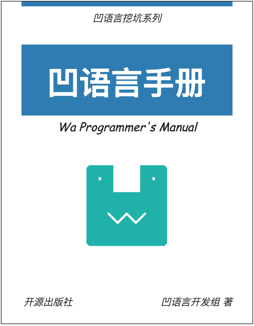

未完成的章节以 * 标记
前言
1. 安装及入门
1.1. 安装
1.2. 你好，世界
2. 程序结构
凹语言和其他编程语言一样，一个大的程序是由很多小的部分组成的。本章介绍全局变量声明、函数声明、常量声明、导入声明和类型声明。
2.1. 全局声明
一个典型的 凹语言 程序源码如下例所示：
// 版权 @2023 凹语言 作者。保留所有权利。
import "errors"
const PI = 3.1415926
global 终极问题的答案: i32
func main {
终极问题的答案 = getAnswer()
println("宇宙的答案：", 终极问题的答案)
println("π:", PI)
err := errors.New("!!!")
println("err:", err.Error())
}
func getAnswer => i32 {
return 42
}
与很多语言类似，在 凹语言 中，双斜杠
//后至行尾的部分为注释，不产生实际作用。
凹代码由全局声明组成，比如在上面的例子中：
import "errors"是一个导入errors模块的声明const PI = 3.1415926是一个常量声明，它声明了一个名为PI的常量，值为 3.1415926global 终极问题的答案: i32是一个全局变量声明，它声明了一个名为终极问题的答案的全局变量，类型为32位整数func getAnswer => i32 {...}是一个函数声明，它声明了一个返回值为32位整数的函数
凹语言 共有5种全局声明，每种声明均由特定的关键字开始（其后跟随该声明对象的实体），声明及对应关键字的关系如下：
global：全局变量声明func：函数声明const：常量声明import：导入声明type：类型声明
本章接下来的小节将依次简介全局变量声明、函数声明、常量声明、导入声明，类型声明将在第6章单独讲解。
2.2. 全局变量声明
全局变量声明以关键字 global 开始，一般语法如下：
global 变量名: 类型 = 初始值表达式
比如下面的例子：
// 版权 @2023 凹语言 作者。保留所有权利。
global aInt: i32 = 42 //32位有符号整数
global _num: f32 = 952.7 //32位浮点数
func main {
println(aInt)
println(_num)
println(名字)
println(counter)
}
global 名字: string = "张三" //字符串
global counter: u32 //32位无符号整数
该程序运行的输出如下：
42
952.7
张三
0
全局变量在模块内部的任何地方都可以使用——哪怕全局变量的声明与使用位于不同的源文件中，只要它们位于同一个模块内即可；在同一个源文件内，也并不要求“先声明再使用”，上面的例子中，变量 名字、counter 就可体现该特点。
需要注意的是，上例中变量 counter 声明时没有给出初始值：
在 凹语言 中，未给定初始值的变量一概以0值初始化，这有助于消除不确定性。
2.3. 函数声明
函数声明以关键字 func 开始，一般语法如下：
func 函数名(参数列表) => (返回值列表) {函数体}
比如下面的例子：
// 版权 @2023 凹语言 作者。保留所有权利。
func swap(i, j: i32) => (i32, i32) {
return j, i
}
func main {
a, b := swap(4, 2)
println("a:", a, ", b:", b)
println(add(a, b))
}
func add(i, j: i32) => i32 {
return i + j
}
该程序运行的输出如下：
a: 2 , b: 4
6
对于没有返回值的函数，=> (返回值列表) 的部分可省略，没有输入参数的函数 (参数列表) 的部分可省略，比如上例中的：func main {...}，即为：func main() => () {...} 的简写。
与全局变量类似，函数可在包内的任何源文件中声明且无需“先声明再使用”。
关于函数的更多信息见第4章。
2.4. 常量声明
常量声明以关键字 const 开始，一般语法如下：
const 常量名: 类型 = 常量值
比如下面的例子：
// 版权 @2023 凹语言 作者。保留所有权利。
const Answer: i32 = 42
const aConstString: string = "你好，凹语言"
func main {
println(Answer)
println(aConstString)
println(aConstInt)
}
const aConstInt = 13
该程序运行的输出如下：
42
你好，凹语言
13
声明常量时，如果不指定类型（比如上例中的 aConstInt），那么它将是无类型常量，无类型常量有4种类型，分别为：无类型整数、无类型浮点数、无类型字符、无类型字符串，常量值写法如下：
const aUntypedInt = 11 //无类型整数
const aUntypedFloat = 13.0 //无类型浮点数
const aUntypedRune = 'a' //无类型字符
const aUntypedString = "abc" //无类型字符串
对常量值的算数逻辑运算是在编译时完成的，比如：
// 版权 @2019 凹语言 作者。保留所有权利。
const K = 4200000000000000000000000
const J = 4200000000000000000000000
func main {
println(K/J)
}
虽然K和J的值均超过了凹中位数最多的整数类型i64的表达范围，但是K/J的值仍然能被正确打印。这也侧面体现了数值常量拥有超过变量基本类型的表达范围和精度。
将常量赋值给变量时的相关规则，将在第3章详细讨论。
2.5. 导入声明
导入声明以关键字 import 开始，一般语法如下：
import 导入模块路径
比如下面的例子：
// 版权 @2023 凹语言 作者。保留所有权利。
import "errors"
func main {
err := errors.New("!!!")
println("err:", err.Error())
}
func getAnswer => i32 {
return 42
}
程序开始处的 import "errors" 声明导入了凹的内置 errors 模块，后续的函数中即可使用该模块的公开对象——如例子中的 errors.New 函数；. 在这里被称为选择操作符，它的含义是从左侧的对象（模块）中选择名称与右侧相同的那个对象来使用，该操作符除了用于选择模块公开的函数、全局变量等对象，还用于选择结构体的成员（详见第6章）。
导入声明应位于源文件内的所有非导入声明之前（既位于头部，紧随文件头注释之后）。若导入多个模块，可以使用括号成组导入，形如：
import (
"errors"
"strconv"
)
该声明与下述声明是等价的：
import "errors"
import "strconv"
在导入模块时，可以给模块起别名，一般语法如下：
import 导入模块路径 => 模块别名
这种用法可以解决同时导入两个路径不同，但名字相同的模块时名字冲突的问题，例如：
import (
"errors"
"mypackage/errors" => myerrors
)
func main {
err := errors.New("!!!") //调用内置 errors 模块
myerr := myerrors.New("!!!") //调用 mypackage/errors 模块
}
与其他声明不同，导入声明的作用范围是当前源文件，如果一个模块内的两个源文件使用了同一个第三方模块，那么两个文件内都需要其导入声明。
在凹语言中，每个源文件导入的其他模块都必须被使用，也就是说，如果导入了一个模块，但并未使用其任何对象，将被视为语法错误。
3. 基础数据类型
从底层而言，所有的数据都是由比特组成。对应的凹语言基础数据类型有整型数、浮点数、字符串等。本章介绍基本数据类型以及局部变量的使用。
3.1. 局部变量声明
第2章介绍了全局变量和常量声明，同样常用的还有局部变量（函数内部定义的变量）声明，它的一般语法为：
局部变量名: 数据类型 = 初始值
与全部变量和常量不同的是：局部变量的声明不以关键字开始；在声明局部变量时，如果省略 = 初始值 部分，则该变量将以0值初始化，如：
aI32: i32 = 42
aString: string = "你好"
aF32: f32 //0.0
另一种常用的声明局部变量的语法使用快捷定义符 := ，语法如下：
局部变量名 := 表达式
使用这种写法时变量的类型将与快捷定义符右侧表达式的类型保持一致，且表达式的值将被赋为该局部变量的初始值，如：
a := 13 //int
f := 3.14 //f64
s := genString() //string
...
func genString() => string { return "Hello" }
凹语言是静态类型语言，合法表达式的类型可以在编译时推定，因此变量的类型是确定的。该
:=语法类似于C++的auto类型。
3.2. 整数
凹语言目前支持以下几种整数类型：
u8：无符号8位整数；u16：无符号16位整数；i32：有符号32位整数；u32：无符号32位整数；i64：有符号64位整数；u64：无符号64位整数；int：不定宽有符号整数；uint：不定宽无符号整数；bool：布尔型。
其中：
int和uint为不定宽整数，它们的宽度是由目标平台决定的。之所以有不定宽整数类型，是因为目标平台的寻址范围可能不同，内建函数len等涉及存储范围的操作，需要统一的数据类型以保持代码在不同的目标平台上能正常编译，并充分利用平台寻址范围；bool型实际内存布局为u8，合法取值的字面值为true、false，对应内存数值为 1 和 0。
当前凹语言的主要目标平台为 wasm32，在该平台下，不定宽整数的位宽为32位，既4字节。
除布尔型外的整数支持以下单目运算：
^：按位取反-：取算术负值（既用0减去操作数）
例如：
i: u8 = 9
println(^i) //246
println(-i) //247
j: i32 = 9
println(^i) //-10
println(-i) //-9
除布尔型外的整数支持以下双目算术运算：
+：求和，两个操作数类型必须一致，返回值类型与操作数一致；-：求差，两个操作数类型必须一致，返回值类型与操作数一致；*：求积，两个操作数类型必须一致，返回值类型与操作数一致；/：求商，两个操作数类型必须一致，返回值类型与操作数一致；%：求余，两个操作数类型必须一致，返回值类型与操作数一致。
例如：
i, j: u8 = 9, 250
println(i + j) //3
println(i - j) //15
println(i * j) //202
println(j / i) //27
println(j % i) //7
除布尔型的整数支持以下双目位运算：
&：按位取与，两个操作数类型必须一致，返回值类型与操作数一致；|：按位取或，两个操作数类型必须一致，返回值类型与操作数一致；^：按位取异或，两个操作数类型必须一致，返回值类型与操作数一致；&^：按位清空，两个操作数类型必须一致，返回值类型与操作数一致。对z = x ^& y，设xn、yn、zn分别为x、y、z的第n位，则当yn为1时zn为0，否则zn等于xn。该运算等价于z = x & (^y)；<<：左移，对z = x << y，z的类型与x一致，y必须为大于0的整数，移位时低位补0；>>：右移，对z = x >> y，z的类型与x一致，y必须为大于0的整数，移位时高位补0。
例如：
i, j: u16 = 343, 47831
println(i & j) //87
println(i | j) //48087
println(i ^ j) //48000
println(i &^ j) //256
println(i << 5) //10976
println(j >> 5) //1494
加、减、乘、左移等运算的结果可能超过操作数的表达范围，此时将截取低位部分作为结果。
除布尔型的整数支持以下比较运算（双目）：
==：相等。操作数类型必须一致，返回值为bool型，符合判断条件返回true，否则返回false，下同；!=：不等；>：大于；>=：大等于；<：小于；<=：小等于。
如果参与比较的两个操作数中有一个为常数，则常数应位于比较运算符的右侧。
布尔型支持以下单目运算：
!：取反，操作数为false返回true，否则返回false。
实际上除了通过2.4节介绍的常量声明的具名常量外，代码中出现的很多字面值，也是常量，比如：
i := 13
代码中的 13 就是一个无类型的整数常量。使用无类型整数常量进行变量快捷声明时，变量的类型为不定宽有符号整数（既 int），上述代码等价于：
i: int
i = 13
将整数常量赋值给整数变量时，会在编译时执行类型和范围检查，自动匹配至变量类型——向无符号整数赋予负数常量、或常量值超过被赋值变量宽度等行为将被判定为非法。
整数拥有所有的二元运算符，二元运算符的优先级按以下顺序递减（同一行内的优先级相同，从左至右执行）：
* / % << >> & &^
+ - | ^
== != < <= > >=
&&
||
3.3. 浮点数
凹语言目前支持以下两种浮点数（均为IEEE 754标准）：
f32：32位浮点数；f64：64位浮点数.
浮点数支持以下单目运算符
-：取算术负值（既用0减去操作数）
例如：
i: f32 = 1.25
println(-i) //-1.25
浮点数支持以下双目算术运算：
+：求和，两个操作数类型必须一致，返回值类型与操作数一致；-：求差，两个操作数类型必须一致，返回值类型与操作数一致；*：求积，两个操作数类型必须一致，返回值类型与操作数一致；/：求商，两个操作数类型必须一致，返回值类型与操作数一致；
例如：
i, j: f64 = 1, 0.5
println(i + j) // 1.5
println(i - j) // 0.5
println(i * j) // 0.5
println(j / i) // 2
浮点数支持以下比较运算（双目）：
==：相等。操作数类型必须一致，返回值为bool型，符合判断条件返回true，否则返回false，下同；!=：不等；>：大于；>=：大等于；<：小于；<=：小等于。
使用无类型浮点常量进行变量快捷声明时，变量的类型为 f64，如下面两种写法是等价的：
f := 1.5
f: f64 = 1.5
3.4. 字符串
字符串在凹语言中被视为基础数据类型，类型名称为：string，字符串字面常量通过双引号 "" 括起定义，采用 UTF-8 编码，例如：
s: string = "你好，凹语言"
println(s) // 你好，凹语言
println("+42") // +42
与整数、浮点数类似，字符串变量也可以使用 := 快捷定义，例如：
s := "编号9527"
字符串支持加法（+）双目操作，返回值为两个字符串的连接，例如：
s1 := "abc"
s2 := "123"
println(s1 + s2) // abc123
容纳字符串的底层结构是一个字节（既u8）数组，可以使用 [] 获取其中某个字节的数值，或一个子串，例如：
s := "abcdefg"
println(s[2]) // 99，既 'c' 的ASCII值
println(s[1:3]) // bc
在这种用法中，[] 内的下标单位是字节，而不是字符。如果源字符串包含非 ASCII 码字符（如中文字符），而下标未处于整字符边界处，则返回的子字串可能非法，例如：
s := "你好"
println(s[1:3]) // ��
s[m:n] 用法从第n个字节处开始截取，返回的字串长度为 n-m 字节。若省略 m 则表示从字符串开始截取，若省略 n 则表示截取至字符串末尾，例如：
s := "abcdefg"
println(s[:3]) // abc
println(s[3:]) // defg
从底层数据的角度看，截取子字符串时没有重新申请字节数组拷贝，而是直接引用原始字符串的地址。为避免多个引用同一片内存的字符串相互修改的影响，字符串被设定为不能局部修改——既不能向 s[n] 赋值。下述写法是非法的：
s := "abcdefg"
s[0] = 99 // 非法操作
两个字符串间可使用 ==、!= 运算符进行相等、不等判断，例如：
s := "abc"
println(s == "123") // false
println(s != "123") // true
内建函数 len 可用于获取字符串长度（以字节为单位），如：
s := "abcdefg"
println(len(s)) // 7
已知问题列表：
- 使用
[]获取字符串变量的指定字节或子串时，未执行边界检查。该问题不影响语法兼容性，后续对本问题的修正不影响已有源代码，凹程序开发者无须对此进行特别处理。
4. 函数
函数是语句序列的打包，以便于被多次重复使用。本章介绍凹语言函数基本用法，以及函数值、匿名函数和闭包等特性。
4.1. 函数调用
我们在之前的章节中已接触过很多函数，比如常用的内置打印函数 println。函数调用的一般语法为：
函数名(实参列表)
实参指函数调用时实际传入的参数，与之对应的是函数声明时定义的形参，形参只在函数体内有效。凹语言在调用函数时，参数使用值传递，在函数体内对形参值的变更不会影响实参的值，例如：
// 版权 @2023 凹语言 作者。保留所有权利。
func Double(i: i32) => i32 {
i = i * 2
return i
}
func main {
j: i32 = 42
println(Double(j)) // 84
println(j) // 42
}
关键字 return 用于退出函数并返回值，一般语法为：
return 返回值列表
如果函数有多个返回值，应使用 , 分隔，例如：
func MulRet() => (i32, i32) {
return 42, 13
}
类似于形参，函数声明时可定义具名返回值，例如：
func showAnswer() => (answer: i32) {
answer = 42
return
}
这种写法等价于：
func showAnswer() => i32 {
answer: i32
answer = 42
return answer
}
与其他变量类似，具名返回值以 0 值初始化。假如某个函数需要返回错误码、分支很多并且大多数分支错误码为 0 值，则使用具名返回值写法可以简化代码。
即使声明了具名返回值，return 时仍然可以指定别的值，比如：
// 版权 @2019 凹语言 作者。保留所有权利。
func showAnswer() => (answer: i32) {
answer = 13
return 42
}
func main {
println(showAnswer()) // 42
}
因此我们可以这样来理解：具名返回值实际上是在函数体内定义了一组局部变量，当该函数内的return 语句未指明返回值时，自动将这一组局部变量作为返回值填入。
4.2. 函数值
在凹语言中，函数可以被当作一种特殊的值，例如：
// 版权 @2023 凹语言 作者。保留所有权利。
func Inc(i: i32) => i32 { return i + 1 }
func Dec(i: i32) => i32 { return i - 1 }
func main {
f := Inc
println(f(42)) // 43
f = Dec
println(f(42)) // 41
}
上例中，f 即为函数值，函数值可以被调用，调用方法与函数调用无异。
函数的类型由其参数以及返回值类型决定，通常这些信息被称为函数签名（Signature），如果两个函数 A 和 B 拥有相同签名，意味着它们：
- 参数个数相同；
- 返回值个数相同；
- 对于任意 n，函数 A 的第 n 个参数的类型与 B 的第 n 个参数类型相同；
- 对于任意 m，函数 A 的第 m 个返回值的类型与 B 的第 m 个返回值类型相同。
函数值的类型也是通过函数签名定义的，比如上例中函数值 f 的类型为 func(i32) => i32，因此上例中 f 的快捷声明 f := Inc 等价于：
f: func(i32) => i32 // f == nil
f = Inc
与其他类型的值一样，函数值也为0值初始化，对应值为
nil
在凹语言中，类型不同的值不能相互赋值，这一点对函数值同样有效，由于函数类型由签名确定，因此将一个函数赋值给签名不同的函数值被视为非法，例如：
func Inc(i: i32) => i32 { return i + 1 }
func main {
f: func(i32)
f = Inc // 编译错误
}
既然被称为“值”，意味着函数值可以作为参数、和返回值在不同函数间传递，例如：
// 版权 @2023 凹语言 作者。保留所有权利。
func inc(i: i32) => i32 { return i + 1 }
func dec(i: i32) => i32 { return i - 1 }
func getFunc(opCode: i32) => func(i32) => i32 {
if opCode == 0 {
return inc
} else if opCode == 1 {
return dec
} else {
return nil
}
}
func useFunc(i: i32, f: func(i32) => i32) {
if f == nil {
println("f == nil")
return
}
println(f(i))
}
func main {
useFunc(42, getFunc(0)) // 43
useFunc(42, getFunc(1)) // 41
useFunc(42, getFunc(2)) // f == nil
getFunc(2)(42) // 运行时异常
}
与其他基本类型不同，函数值只能与 nil 比较，既：函数值位于操作符 ==、!= 左侧时，右侧只能为 nil，对两个非常量函数值执行比较操作被视为非法。
如果被调用的函数值为 nil，将触发不可恢复的运行时异常。
函数值与 C 系语言中的函数指针作用类似，可以更灵活的动态调整执行分支。但需要指出的时，相比于直接调用函数，调用函数值有一些额外消耗，性能敏感的场合需要格外注意。
4.3. 匿名函数及闭包
上一节介绍了函数值的基本用法，既然函数可被视为值，那么，在凹语言函数内部，是否可以像声明基本类型字面量那样，声明函数字面量？答案是肯定的，例如：
// 版权 @2023 凹语言 作者。保留所有权利。
func useFunc(i: i32, f: func(i32) => i32) {
if f == nil {
println("f == nil")
return
}
println(f(i))
}
func main {
f := func(i: i32) => i32 { return i * i } // 声明匿名函数并赋值给 f
useFunc(3, f) // 9
}
其中快捷声明的函数值 f，它的初始值是字面量 func(i: i32) => i32 { return i * i }，既一个没有名字的函数。在凹语言中，这种没有名字的函数字面量被称为匿名函数。在访问者模式、自定义快速排序等应用场景中，经常需要传入一些函数值参数，而这些函数可能仅在当前上下文环境出现一次，为此额外定义模块级的全局函数有诸多不便，这时即可使用匿名函数。
在函数A内部声明的匿名函数B，可以访问A内部的局部变量，例如：
// 版权 @2023 凹语言 作者。保留所有权利。
func useFunc(i: i32, f: func(i32) => i32) {
if f == nil {
println("f == nil")
return
}
println(f(i))
}
func main {
n: i32 = 0
f := func(i: i32) => i32 {
n = i * i
return n
}
useFunc(3, f)
println(n) // 9
}
可见函数值 f 可以读写外层的局部变量 n。再来看一个更加复杂的例子：
// 版权 @2023 凹语言 作者。保留所有权利。
func genClosure(i: i32) => func() => i32 {
n := i
return func() => i32 {
n = n + 1
return n
}
}
func main {
c := genClosure(0)
d := genClosure(99)
println(c()) // 1
println(d()) // 100
println(c()) // 2
println(d()) // 101
}
每次调用 genFunc 都将生成一个函数值，这个函数值捕获了局部变量 n，函数值每次执行会对捕获的 n 执行加1，多次执行 genFunc 所获得的函数值，它们捕获的 n 是不同的，每执行一次，捕获一个新的实例。
在函数内声明的匿名函数值，携带了本次运行时捕获的局部变量的状态。显然，这种函数值实质上就是闭包。
5. 复合数据类型
5.1. 引用
在凹语言中，在一个变量前添加 & 符号被称为 取引用 操作，假设该变量的类型为 T，取引用操作返回值的类型为 *T，被称为 T型引用，例如：
i: i32 = 42
j := &i // j的类型为 *i32 ，既：i32型引用
在引用型变量前添加 * 符号被称为 解引用 操作，解引用表达式的值为它所引用的原始变量的值，例如：
i: i32 = 42
j := &i
println(*j) // 42
在这里 *j 返回了 i 的值，类型与 i 一样为 i32。解引用可以被赋值，其作用为向被引用的原始变量赋值，例如：
i: i32 = 13
j := &i
*j = 42
println(i) // 42
由此可见，凹语言中的引用与C系语言中的指针作用类似，但由于凹语言使用自动内存管理，这种相似性仅存在于表面，因此我们使用引用这一术语以示区别。二者最显著的不同，可通过下面这个例子窥见一斑：
// 版权 @2023 凹语言 作者。保留所有权利。
func genI32Ref() => *i32 {
i: i32 = 9527
return &i
}
func main() {
p := genI32Ref()
*p = 13
q := genI32Ref()
println(*p) // 13
println(*q) // 9527
}
在凹语言中，跨函数传递引用是合法操作。返回局部变量的引用安全无害，编译器和运行时会跟踪变量使用的内存，自动执行清理回收。当然这导致了引用与指针的另一个直观的不同，既：引用不能执行算术运算。
对于引用类型 *T，T 可以是基础类型，也可以是任何复合类型或自定义类型，**T 这样的多级引用（类似于C语言多级指针）也是合法的。
已知问题列表：
- 目前使用的RC模式无法自动回收孤环，进而导致内存泄漏。该问题不影响语法兼容性，后续对本问题的修正不影响已有源代码，凹程序开发者无须对此进行特别处理。
5.2. 数组
数组类型的基本声明如下：
[N]T
其中，N 为数组长度（大等于0常整数），T 为数组元素类型；例如：
a: [3]i32
a[0] = 42
println(a[0]) // 42
与很多语言类似，凹语言使用 x[M] 语法访问数组内的指定元素。数组变量声明时，可使用以下方式设定数组元素初始值：
a: [3]i32 =
println(a[0], a[1], a[2]) // 13 42 9527
[3]i32{13, 42, 9527} 声明了一个数组字面值，因此上例中数组变量 a 的声明可以使用快捷声明简化为：
a := [3]i32{13, 42, 9527}
声明数组字面值时，其后 {} 内所含元素的个数可以小于数组长度（但不可大于），不足的部分为 0 值，例如：
a := [3]i32{13, 42}
println(a[2]) // 0
内置函数 len 可用于获取数组长度既数组中所含元素的个数，例如：
a := [3]i32
println(len(a)) // 3
声明数组字面值时，若数组长度部分写为 ...，则表明数组长度由其后 {} 内的元素个数决定，例如：
a := [...]i32{13, 42}
println(len(a)) // 2
在凹语言中数组是值类型，例如：
a := [...]i32{13, 42}
b: [2]i32
b = a
println(b[0], b[1]) // 13 42
b[0] = 9527
println(a[0]) // 13
由此可见，将一个数组赋值给另一个数组时，会将其中的每个对应元素都进行赋值，既执行深拷贝操作。由于数组是值，赋值后的数组间不存在相互关联。
元素类型相同，但长度不同的数组，被认为是不同的类型，因此下列程序非法：
a: [2]i32
b: [3]i32
b = a // 非法，类型不同不可赋值
已知问题：
- 通过变量下标访问数组元素时，未执行边界检查。该问题不影响语法兼容性，后续对本问题的修正不影响已有源代码，凹程序开发者无须对此进行特别处理。
- 在目前版本的实现中，数组被展开为一组线性值，因此数组赋值时，虚拟寄存器和指令数与数组长度成整倍数关系，若长度过大，目标代码的体积会急剧膨胀。该问题不影响语法兼容性，后续对本问题的修正不影响已有源代码，在现阶段，程序开发者应关注：除全局变量外，尽可能不要使用长度大于8的数组。